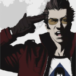

SITE AUTHOR

This is a beginner guide about all games made by Suda51 that are commonly agreed to be part of the "Kill the Past" series. All of them share the same continuity and similar themes that make up the backbone of Suda's entire lifework in his 27+ year old carrer. It commonly focuses on the idea of the past being a burden that needs to be overcome in order to face the future. It also has themes such as political corruption, rampant urban development, existencial anguish and the threat of data collection.
Kill the Past is a series of games with similar thematic tones or directly connected to a shared universe. It depicts characters in various walks of life who refuse or are either unable to let go of their past in ways that catch up to them without fail. In Kill the Past, to refuse to face your past is to die. Unable to move on, unable to understand, it is akin to live in a constant purgatory. Facing your past is the most difficult and most important part of a person’s life. It acknowledges the understanding of your self, your struggles, your fears, and your hopes. The past becomes the missing link that bridges every facet of a person’s identity. It is then quite on point that the work of the western fandom to piece things together is to face Suda51’s past head-on.
But Kill the Past is still a bit more than that, it represents a lot of punk essence of Suda and the Grasshopper company. Its dadaist inspirations shine through all these games, many of them being counter-culture, defying established conventions through the writing but also as a game, and carrying an overall sense of anti-capitalism. Common themes revolve around political corruption, rampant urban development and its consequences like the breaking down of communities for a more individualistic society both at a professional and personal level.
A lot of these elements and themes find their main inspiration through Suda’s own life as described in his biography. Starting as an only child from a single mother in an era of Japan where divorce was still heavily frowned upon, from the loneliness of his youth, his emancipation through music and pop culture as well as the various jobs he has taken early in his adult life from handbag designer to door-to-door salesman to funeral service worker. These are all events of his life that ends up coming back in his games in one way or another. He is someone who lived in the urban transformation of Japan, from the then-rural Nagano to the life in Tokyo where the vastness of the city is only matched by the intense loneliness it brings.
Kill the Past becomes a theme that applies as much to its creator than it does to the characters he creates. An ensemble of characters where each of them represents a specific part of Suda’s life that struggles to find a meaning that could exist but is futile to search for. The answer, then, is to learn to face what’s behind you in order to finally move forward. To process what kind of person you are, and to learn what kind of person you want to be. As such, his way of processing it becomes inherently postmodernistic, as if purposefully avoiding what has been done in order to find his own answers through paths that none has taken before. Grasshopper’s games are never strictly one genre, they blend together, sometimes bringing something new, sometimes bringing something old, in order to seek their answers in new and unpredictable ways, as if they themselves are going with the currents, and checking out what is beyond the hill next to the branch they managed to latch on to.
The connection between the Kill the Past games always brought the question of whether or not there was a broader universe shared by all of Grasshopper’s games. This question was always teased but never confirmed, that is until Travis Strikes Again: No More Heroes. The release of this game brought the Sudaverse to the forefront, making many games linked together whether or not they are part of the Kill the Past series, even the ever-elusive Killer7. Examples of non-KTP games that are part of the broader Sudaverse (and as such part of the same timeline) are: Shadows of the Damned, Killer is Dead, Diabolical Pitch and Michigan: Report from Hell. Some are a definite and accepted part of the universe, some others might be more debatable and potentially offer alternate versions that fits the universe more, but all of these are accepted to be a part of the Sudaverse in one way or another.